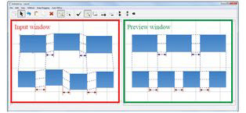
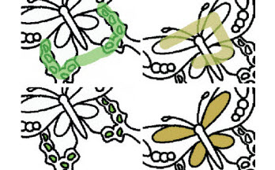
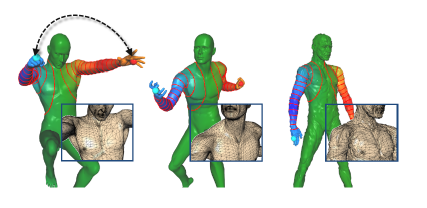
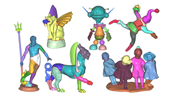

Pengfei XuPh.D in Computer ScienceEmail: xupengfei dot cg at gmail dot comAddress: Rm. 4204, CSE Department, HKUST
|
|---|
I am a Postdoctoral Research Fellow with Prof. Chiew-Lan Tai in the Department of Computer Science and Engineering, HKUST. I obtained my Ph.D in Computer Science from HKUST in 2015, under the guidance of Prof. Chiew-Lan Tai and Prof. Hongbo Fu. Before joining HKUST, I received Bachelor's degree in Mathematics from Zhejiang University in 2009.
My reserach is in Human Computer Interaction and Computer Graphics. Here is my CV.
Currently I am looking for a Postdoc/Researcher/Faculty position. Please feel free to contact me if you are interested in my background.
Our arrangement interface "GACA" was accpeted to CHI 2015 as a full paper.
|  |
Global beautification of layouts with interactive ambiguity resolution ACM User Interface Software and Technology Symposium 2014. [paper] [project page] |
|---|
|  |
Lazy Selection: a scribble-based tool for smart shape elements selection ACM SIGGRAPH Asia 2012. [paper] [project page] |
|---|
|  |
Pairwise Harmonics for Shape Analysis IEEE Transactions on Visualization and Computer Graphics, 2012. [paper] |
|---|
|  |
Mesh Segmentation with Concavity-Aware Fields IEEE Transactions on Visualization and Computer Graphics, 2011. [paper] [project page] |
|---|